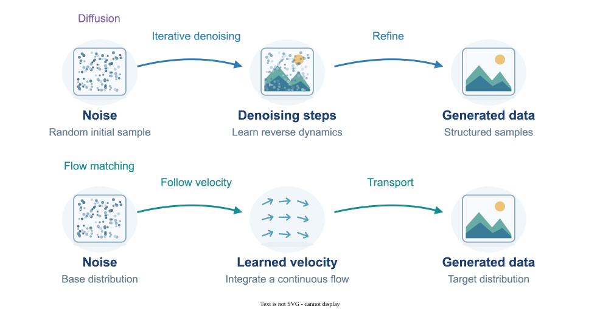

Diffusion & Flow Matching
Diffusion and flow matching are generative modeling methods that learn to transform a simple starting distribution, such as noise, into structured data. Diffusion models learn to reverse a gradual noising process, while flow matching learns a field that guides samples along a transport path. My research studies sampling guarantees, acceleration, missing data, discrete generation, and applications to reinforcement learning and image restoration.
System Diagram

My publications on this area
Peer-Reviewed Conference Papers
-
Fairoz Nower Khan, Nabuat Zaman Nahim, Ruiquan Huang, Haibo Yang, and Peizhong Ju,
"Flow Matching for Offline Reinforcement Learning with Discrete Actions,"
40th Conference on Neural Information Processing Systems (NeurIPS'26), 2026 (accepted).
arXiv version
NeurIPS
@inproceedings{khan2026flowmatchingofflinereinforcement, title={Flow Matching for Offline Reinforcement Learning with Discrete Actions}, author={Fairoz Nower Khan and Nabuat Zaman Nahim and Ruiquan Huang and Haibo Yang and Peizhong Ju}, booktitle={Advances in Neural Information Processing Systems}, year={2026}, note={Accepted}, url={https://arxiv.org/abs/2602.06138} } -
Yuchen Liang, Peizhong Ju, Yingbin Liang, and Ness B. Shroff, "Theory on Score-Mismatched
Diffusion Models and Zero-Shot Conditional Samplers,"
13th International Conference on Learning Representations (ICLR'25).
arXiv version
ICLR
@inproceedings{ liang2024theory, title={Theory on Score-Mismatched Diffusion Models and Zero-Shot Conditional Samplers}, author={Yuchen Liang and Peizhong Ju and Yingbin Liang and Ness Shroff}, booktitle={The Thirteenth International Conference on Learning Representations}, year={2025} } -
Yuchen Liang, Peizhong Ju, Yingbin Liang, and Ness B. Shroff, "Broadening Target
Distributions for Accelerated Diffusion Models via a Novel Analysis Approach,"
13th International Conference on Learning Representations (ICLR'25).
arXiv version
ICLR
@inproceedings{ liang2024broadening, title={Broadening Target Distributions for Accelerated Diffusion Models via a Novel Analysis Approach}, author={Yuchen Liang and Peizhong Ju and Yingbin Liang and Ness Shroff}, booktitle={The Thirteenth International Conference on Learning Representations}, year={2025} }
Journal Papers
-
Nabuat Zaman Nahim, Fairoz Nower Khan, and Peizhong Ju, "A Survey of Flow Matching in
Reinforcement Learning," Transactions on Machine Learning Research (TMLR), 2026.
Survey Certification
paper
arXiv version
@article{nahim2026survey, title={A Survey of Flow Matching in Reinforcement Learning}, author={Nahim, Nabuat Zaman and Khan, Fairoz Nower and Ju, Peizhong}, journal={Transactions on Machine Learning Research}, year={2026}, url={https://openreview.net/forum?id=P6e5IC4gPe} }
Pending Papers
- Fairoz Nower Khan, Nabuat Zaman Nahim, and Peizhong Ju,
"Flow Matching with Missing Data."
arXiv version
@misc{khan2026flowmatchingmissingdata, title={Flow Matching with Missing Data}, author={Fairoz Nower Khan and Nabuat Zaman Nahim and Peizhong Ju}, year={2026}, eprint={2607.28698}, archivePrefix={arXiv}, primaryClass={cs.LG}, url={https://arxiv.org/abs/2607.28698}, } - Amjad Mahdi Alqarni and Peizhong Ju,
"FoA-SR: Faithful or Aesthetic? Profile-Aware Preference Optimization for Real-World Image
Super-Resolution."
arXiv version
@misc{alqarni2026foasr, title={FoA-SR: Faithful or Aesthetic? Profile-Aware Preference Optimization for Real-World Image Super-Resolution}, author={Amjad Mahdi Alqarni and Peizhong Ju}, year={2026}, eprint={2606.10275}, archivePrefix={arXiv}, primaryClass={cs.CV}, url={https://arxiv.org/abs/2606.10275}, } - Fairoz Nower Khan, Nabuat Zaman Nahim, and Peizhong Ju,
"Discrete Flow Matching for Offline-to-Online Reinforcement Learning."
arXiv version
@misc{khan2026discreteflowmatchingofflineonline, title={Discrete Flow Matching for Offline-to-Online Reinforcement Learning}, author={Fairoz Nower Khan and Nabuat Zaman Nahim and Peizhong Ju}, year={2026}, eprint={2605.12379}, archivePrefix={arXiv}, primaryClass={cs.LG}, url={https://arxiv.org/abs/2605.12379}, } - Fairoz Nower Khan, Nabuat Zaman Nahim, Md Sajid Ahmed, Ruiquan Huang, and Peizhong Ju,
"Discrete MeanFlow: One-Step Generation via Conditional Transition Kernels."
arXiv version
@misc{khan2026discretemeanflow, title={Discrete MeanFlow: One-Step Generation via Conditional Transition Kernels}, author={Fairoz Nower Khan and Nabuat Zaman Nahim and Md Sajid Ahmed and Ruiquan Huang and Peizhong Ju}, year={2026}, eprint={2605.12805}, archivePrefix={arXiv}, primaryClass={cs.LG}, url={https://arxiv.org/abs/2605.12805}, }
Explore Machine Learning
- Reinforcement Learning
- Federated Learning
- Continual & Transfer Learning
- Diffusion & Flow Matching
- Interpretability & Generalization